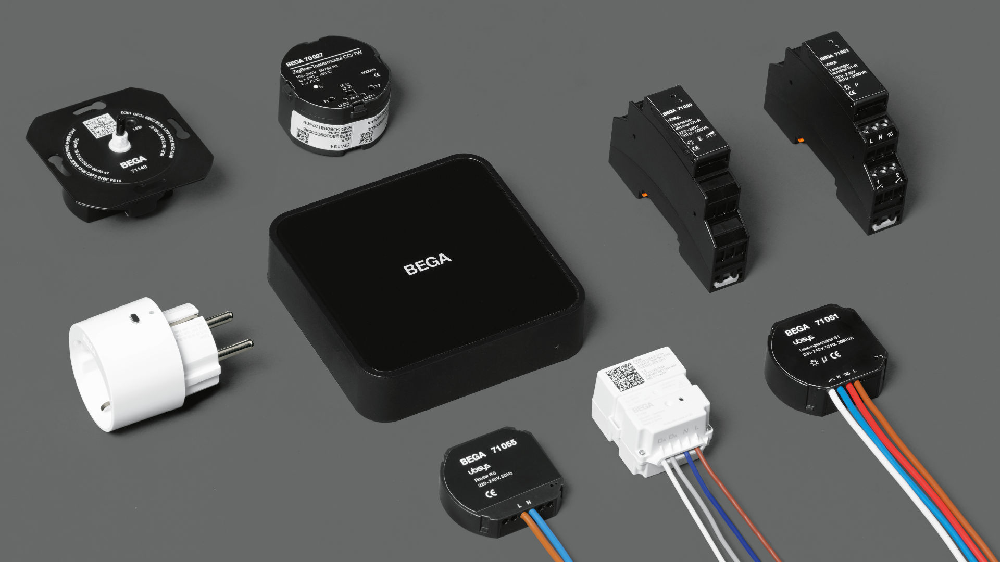

La conectividad por red ZigBee es el estándar de red de malla inalámbrica más popular de la industria para la conexión entre sensores. Esta tecnología es un protocolo de comunicación inalámbrica diseñado para ser usado en redes de área personal (WPAN). Para aclarar, gracias a esta comunicación de red, una cafetera de tu cocina la cual tiene implementada esta tecnología podría conectarse o estar conectada con una tostadora con misma red, ambas teniendo conectividad vía ZigBee. (Tomar, 2011)
Este protocolo junto al estándar IEEE 802.15.4 son los estándares de redes personales de baja velocidad de red inalámbrica por excelencia. Dichos estándares han permitido evitar el gran coste que supone tanto la instalación como el mantenimiento del cableado de la maquinaria de control en la industria.
En paralelo al estándar IEEE 802.15.4, se encuentra ZigBee Alliance (protocolo ZigBee), el cual define las dos últimas capas del protocolo TCP/UDP, las cuales son la capa de red y la de aplicaciones. Mientras que el estándar del IEEE define toda capa física y de control de acceso (capa MAC).
Estructura del protocolo ZigBee.
Características:
Manejado por el estándar IEEE, el foco de las posibles aplicaciones de red va dirigido a la gran densidad de nodos por red, costes bajos de implementación y al bajo consumo energético, haciendo que haya dos modos para el protocolo, Tx/Rx y Suspendido. Entre diversas cualidades de esta tecnología, destacamos:
Modo físico dual(C-PHY/D-PHY): C-PHY con 2.4 GHz y D-PHY 915 MHz. Esta dualidad da acceso a tres rangos de banda ancha diferentes: 2.4-2.4835 GHz, 868-870 MHz y 902-928 MHz. La frecuencia más alta (proveniente de C-PHY) es aplicable a nivel global y la frecuencia baja en áreas específicas: Europa, Australia, etc.
Gateway. Uno de los principales requisitos de ZigBee, es que debe existir un Gateway principal al que se puedan conectar todos los dispositivos inteligentes. Este Gateway también es una de las principales ventajas, puesto que sería el único que ocupa una dirección IP en la red local.
Rango de alcance local, de 50 a 100 metros. Esta posible carencia en casos de WPAN de amplio alcance (casas particulares de x m cuadrados) se puede suplir con repetidores de señal, unos pequeños dispositivos similares a un pendrive que solo requieren ser alimentados mediante un puerto USB y permiten ampliar el rango de alcance del Gateway
Alto rendimiento y latencia baja en ciclos de trabajo (de datos), cerca del 0.1%.
La arquitectura de red ZigBee está comprendida por varios componentes fundamentales: el nodo coordinador, nodos finales o “end devices” y los router. El nodo coordinador es aquel al que se conectan todos los nodos finales (también llamado Gateway), los nodos finales son todos los aparatos electrónicos conectados por ZigBee.
Las topologías típicas son: estrella, de malla y “de igual a igual”.

Componentes de un sistema ZigBee.
Usos y ejemplos:
La tecnología ZigBee sirve como base de redes inalámbricas WSN, las cuales a su vez sirven para la aplicación del IOT en un sistema domótico. Estas redes WSN están formadas por varios nodos finales y un nodo coordinador, distribuidos en base a su topología.
La WSN hace de pasarela entre el ecosistema administrado por ZigBee y la red IP del domicilio donde se integra el sistema domótico. Esta red está constituida por elementos de la casa que están conectados a la misma red y por la aplicación que los controla.
Esta tecnología encontró sus aplicaciones en una variedad de sistemas inalámbricos como la automatización doméstica o industrial. Sus aplicaciones se encuentran en las siguientes áreas:
Automatización del hogar: define las aplicaciones ZigBee enfocadas en la administración de hogares inteligentes. Puede ser utilizado para controlar remotamente alarmas de seguridad, iluminación, calefacción, puertas, refrigeración y otras aplicaciones residenciales.
Energía inteligente: permite la comunicación inalámbrica entre las redes de área doméstica (HAN) y la infraestructura de medición avanzada, para poder mejorar así la rapidez de lectura de los contadores de agua, gas y electricidad. Ayuda a las empresas de servicios públicos a gestionar eficazmente los servicios prestados a sus clientes, sobre todo durante los picos de demanda.
Atención sanitaria: permite la monitorización remota de pacientes en hospitales y centros de salud. Esto hace que la movilidad de los pacientes no afecta a la monitorización. Un ejemplo sería cómo la presión sanguínea de los pacientes se monitoriza a distancia a través de la tecnología de sensores inalámbricos ZigBee.
Supervisión y control de procesos industriales: los procesos industriales se supervisan y controlan ahora de forma inalámbrica. Uno de los ejemplos es el seguimiento de inventarios industriales, donde los equipos se localizan por un nodo ZigBee y son etiquetados con sensores inalámbricos.
Control remoto para electrónica de consumo: en lugar de utilizar los infrarrojos (IR) la mayoría de los controladores remotos para electrónica de consumo utilizan ahora radiofrecuencia (RF) con la ayuda de la tecnología ZigBee RF4CE. Así se elimina la limitación de la línea de visión del mando a distancia IR.